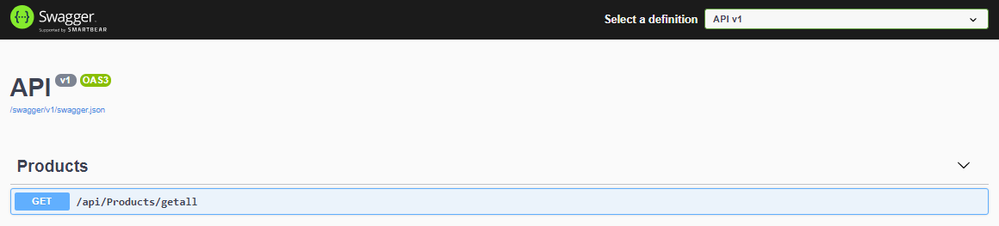

<div class="content-container">
  <div class="blogpost-container">
    <div class="blogpost-body">
      <div class="mat-display-1">
        How to build a project with ASP.NET 5 Web API and Angular 11
      </div>
      <p>
        This article will guide you through step by step creation of a starting
        point project with ASP.NET 5 Web API as backend and Angular 11 as a
        frontend. First we will create standalone Web API application, then
        standalone Angular 11 application and finally we will configure them to
        work together. As a result the solution will provide you with the
        ability to have isolated backend and frontend of your application,
        however, should you choose so, the resulting solution will also enable
        you to serve compiled Angular app as static files, through the ASP.NET
        Web API app - acting not only as API provider but also as a server.
      </p>
      <h1>Prerequisites</h1>
      <p>
        In order to follow this guide as a minimum you will need the following:
      </p>
      <ul>
        <li>PC or Laptop with Windows 10 operating system</li>
        <li>.NET 5 SDK</li>
        <li>Node.js</li>
        <li>Angular 11</li>
        <li>Visual Studio Code (with at least c# extension)</li>
      </ul>
      <h1>Step 1: Initial ASP.NET 5 Web API project setup</h1>
      <p>
        First we need to pick a name for out project. Let's pick "<span
          class="bold-text"
          >Shopping Portal</span
        >" and create a directory where we are going to store our project files.
        For example: "<span class="bold-text">C:\Projects\ShoppingPortal</span
        >". We can now open the created folder in Visual Studio Code and start
        coding. In order to generate starter files for our ASP.NET Web API
        project we need to open VS Code terminal (keyboard shortcut "<span
          class="bold-text"
          >Ctrl+Shift+'</span
        >") and type the following command:
      </p>
      <app-formatted-code
        language="bash"
        [code]="createAPIProjectSnippet"
      ></app-formatted-code>
      <p>
        The above command will create "<span class="bold-text">API</span>"
        folder in current directory and generate initial starter files based on
        the official Microsoft Web API project template. For simplicity, key
        "<span class="bold-text">--no-https</span>" will configure our app to
        use only http. Once our initial project is generated, let's open the
        generated "<span class="bold-text">API</span>" folder using
        <span class="bold-text">File->OpenFolder</span>. VS Code will promt us
        whether we want to auto generate assets for build and debug and we
        acknowledge. If for some reason prompt did not appear we can generate
        assets manually by openning command palette ("<span class="bold-text"
          >Ctrl+Shift+p</span
        >") and typing "<span class="bold-text"
          >.Net: Generate Assets for Build and Debug</span
        >".
      </p>
      <p>
        Now we can start modifying our solution. Let's delete default dummy
        <span class="bold-text">WeatherForecastController.cs</span> and
        <span class="bold-text">WeatherForecast.cs</span> files as we will not
        use them. We want all of our top level API controllers to be accessible
        via the following url pattern: "<span class="bold-text"
          >BaseUrl/api/controllername</span
        >" (BaseUrl for our development environment will be default
        <span class="bold-text">http://localhost:5000</span>). For this purpose
        we will create the
        <span class="bold-text">ApiBaseController.cs</span> class in our
        Controllers folder. All of our other controllers will be derived from
        this class and inherit necessary functionality.
      </p>
      <app-formatted-code
        language="csharp"
        [code]="apiBaseSnippet"
      ></app-formatted-code>
      <p>
        As you can see our base class is derived from basic MVC Controller
        without view support since we will be using Angular for our views.
        Additionally we have two decorators:
        <span class="bold-text">ApiController</span> - configures controller
        with features and behaivior targeted for Web API development; and
        <span class="bold-text">Route("api/[controller]")</span> which will
        achieve the desired url pattern.
      </p>
      <p>
        Our next step is to create the first model for representing products of
        our shopping portal. Let's create new folder "<span class="bold-text"
          >Models</span
        >" and inside a file "<span class="bold-text">Product.cs</span>" with
        our Product class:
      </p>
      <app-formatted-code
        language="csharp"
        [code]="productSnippet"
      ></app-formatted-code>
      <p>
        We are now ready to create our first API. In the Controllers folder
        let's create the
        <span class="bold-text">ProductsController.cs</span> file which will
        have a single HttpGet method, with route "<span class="bold-text"
          >getall</span
        >" for retrieving all of our products. Since our controller is derived
        from our ApiBaseController the API will be available via
        <span class="bold-text">http://localhost:5000/api/products/getall</span
        >.
      </p>
      <app-formatted-code
        language="csharp"
        [code]="productsControllerSnippet"
      ></app-formatted-code>
      <p>
        It's time to test our work so far. By default ASP.NET Web API template
        comes preconfigured with the Swagger - a convenient tool for documenting
        and testing API's. First let's launch our application. In the terminal
        enter the following command:
      </p>
      <app-formatted-code
        language="bash"
        [code]="dotnetWatchSnippet"
      ></app-formatted-code>
      <p>
        Once our application started we can open our browser and navigate to
        either
        <span class="bold-text">http://localhost:5000/api/products/getall</span>
        to see the plain text response from our API or to
        <span class="bold-text">http://localhost:5000/swagger</span> to see the
        following Swagger interface:
      </p>
      
      <p>
        To test our API first click the
        <span class="bold-text">/api/Products/getall</span> bar; then
        <span class="bold-text">Tryout</span> button and finally
        <span class="bold-text">Execute</span> button. As you can see we have
        got the expected response body:
      </p>
      <app-formatted-code
        language="javascript"
        [code]="responseBodySnippet"
      ></app-formatted-code>
      <p>
        We now have a working ASP.NET Web API project, however we still need to
        create customer facing Angular application and make necessary
        configurations to enable both apps to work together.
      </p>
      <h1>Step 2: Initial Angular 11 project setup</h1>
      <p>
        In this section we will create empty Angular 11 project, that will act
        as a frontend application for our shopping portal. We want to create it
        in the root project folder, therefore we should open "<span
          class="bold-text"
          >ShoppingPortal</span
        >" folder with Visual Studio Code via
        <span class="bold-text">File->OpenFolder</span>. Next step is to open
        terminal with "<span class="bold-text">Ctrl+ Shift+'</span>" and type
        the folloving Angular CLI command:
      </p>
      <app-formatted-code
        language="bash"
        [code]="createAngularSnippet"
      ></app-formatted-code>
      <p>
        The above command will create new folder called "<span class="bold-text"
          >client</span
        >" in our root "<span class="bold-text">ShoppingPortal</span>" folder
        and generate all necessary starting point files. Some of the added keys
        in the command are there for simplicity purpoces:
      </p>
      <ul>
        <li>
          "<span class="bold-text">--skip-git"</span> key prevents generation of
          git repository
        </li>
        <li>
          "<span class="bold-text">--skip-tests</span>" key prevents generation
          of automated tests;
        </li>
        <li>
          "<span class="bold-text">--style css</span>" key configures default
          styling file formats to be .css;
        </li>
        <li>
          "<span class="bold-text">--routing true</span>" configures app to
          enable routing.
        </li>
      </ul>
      <p>
        Once files are generated let's open the "<span class="bold-text"
          >client</span
        >" folder with Visual Studio Code via
        <span class="bold-text">File->OpenFolder</span>. Next let's get rid of
        some default boilerplate content. Open the file "<span class="bold-text"
          >client/src/index.html</span
        >" and change the title from "<span class="bold-text">client</span>" to
        "<span class="bold-text">Shopping Portal</span>". As part of the same
        exercise open "<span class="bold-text"
          >client/src/app/app.component.html</span
        >" file, delete all of the contents and type in the following:
      </p>
      <app-formatted-code
        language="html"
        [code]="initialHtmlSnippet"
      ></app-formatted-code>
      <p>
        Router outlet tag is angular component is a container for different
        routes content and is not used in this tutorial.
      </p>
      <p>
        Our app is now ready to be tested. To launch the application open the
        terminal with "<span class="bold-text">Ctrl+ Shift+'</span>" and type
        the following command:
      </p>
      <app-formatted-code
        language="bash"
        [code]="ngServeSnippet"
      ></app-formatted-code>
      <p>
        Once compilation is complete navigate to default app url
        <span class="bold-text">http://localhost:4200</span> and you should see
        the welcome message. We now have working Angular application, however we
        still need to configure both of our frontend and backend apps to be aple
        to communicate with each other.
      </p>
      <h1>
        Step 3: Configuring communication between ASP.NET Web API and Angular
        apps
      </h1>
      <p>
        For security reasons browsers restrict HTTP requests initiated from
        different domains by default. In our case our client app is running on
        <span class="bold-text">http://localhost:4200</span> domain and our API
        app is running on
        <span class="bold-text">http://localhost:5000</span> domain which are
        considered as different. To enable client app to be able to send HTTP
        requests to the API app we need to configure the API with the CORS
        (Cross-Origin Resource Sharing) policy. In order to do that we need to
        modify "Configure" method in the "<span class="bold-text"
          >API/Startup.cs</span
        >" file:
      </p>
      <app-formatted-code
        language="csharp"
        [code]="configureCorsSnippet"
      ></app-formatted-code>
      <p>
        As you can see our policy allows any HTTP methods that have any HTTP
        headers but only when they come from
        <span class="bold-text">http://localhost:4200</span> domain.
      </p>
      <p>
        The next step is to configure our client app and write some code to
        actually use our Products API. As we have done before we need to open
        the "<span class="bold-text">client</span>" folder with Visual Studio
        Code via <span class="bold-text">File->OpenFolder</span>. Common
        practice is to set the url of our API globally as environment variables.
        Therefore we modify both "<span class="bold-text"
          >client/src/environments/environment.ts</span
        >" (used in development) and "<span class="bold-text"
          >client/src/environments/environment.prod.ts</span
        >" (used in production) files. Below is the code from "<span
          class="bold-text"
          >client/src/environments/environment.ts</span
        >":
      </p>
      <app-formatted-code
        language="typescript"
        [code]="environmentSnippet"
      ></app-formatted-code>
      <p>
        Note that the only difference in the production file is the "<span
          class="bold-text"
          >true</span
        >" value against the "<span class="bold-text">production</span>"
        property.
      </p>
      <p>
        Another useful thing to do is to create a service that will store all of
        our API paths. Currently we have only one API URL
        <span class="bold-text">http://localhost:5000/api/products/getall</span>
        and can easily remember this location. However in the future we might
        have large amount of destinations and it would be good to have them all
        in a centralised location. Let's open the terminal with "<span
          class="bold-text"
          >Ctrl+ Shift+'</span
        >" and type the folloving Angular CLI command:
      </p>
      <app-formatted-code
        language="bash"
        [code]="createServiceSnippet"
      ></app-formatted-code>
      <p>
        The above command will generate starting "<span class="bold-text"
          >client/src/app/_services/api-routes/api-routes.service.ts</span
        >" file. We can now modify this file to have the following code:
      </p>
      <app-formatted-code
        language="typescript"
        [code]="apiRoutesSnippet"
      ></app-formatted-code>
      <p>
        The <span class="bold-text">baseUrl</span> property will have the
        previously setup value in the environment files and if in the future our
        API domain will change we have to change it only in one place. The
        method <span class="bold-text">getAllProductsUrl</span> will return the
        final URL for retrieving all of our products.
      </p>
      <p>
        Let's now create the Product interface which will improve our
        development experience by leveraging typescript types system and
        enabling us to use IntelliSense. Enter the following command in the
        terminal:
      </p>
      <app-formatted-code
        language="bash"
        [code]="createProductSnippet"
      ></app-formatted-code>
      <p>
        The above command will create "<span class="bold-text"
          >_interfaces/product.ts</span
        >" file with blank interface. We now can add properties of our product
        and the final interface code will look like:
      </p>
      <app-formatted-code
        language="typescript"
        [code]="productInterfaceSnippet"
      ></app-formatted-code>
      <p>
        All of the above changes enabled us to create a
        <span class="bold-text">Products</span> service - centralised utility
        that in the future will be used for retrieving/editing/adding/deleting
        our products. In this tutorial however we will only implement retrieving
        functionality as other operations would require configuring our API to
        have some sort of data persistance functionality, for example
        communication with SQL database.
      </p>
      <p>
        To create <span class="bold-text">Products</span> service enter the
        following command in terminal:
      </p>
      <app-formatted-code
        language="bash"
        [code]="createProductsServiceSnippet"
      ></app-formatted-code>
      <p>
        The above command will create "<span class="bold-text"
          >client/src/app/_services/products.service.ts</span
        >" file. We now can add the code to retrieve data from our API:
      </p>
      <app-formatted-code
        language="typescript"
        [code]="productsServiceSnippet"
      ></app-formatted-code>
      <p>
        As you can see in the code above we make use of the: HttpClient -
        Angular tool for making HTTP requests; ApiRoutesService - our service
        for determining the API URL and the Product interface to indicate that
        returned data will be array of products with specified properties.
        HttpClient in not included in our Angular app by default therefore we
        need to include it manually. This is done by modifying the
        <span class="bold-text">client/src/app/app.module.ts</span>" file to
        have necessary imports:
      </p>
      <app-formatted-code
        language="typescript"
        [code]="appModuleSnippet"
      ></app-formatted-code>
      <p>
        We are almost there! We can now use our products service to retrieve
        data. Let's modify our main application component to make use of our
        service. Change the "<span class="bold-text"
          >client/src/app/app.component.ts</span
        >" to have the following code:
      </p>
      <app-formatted-code
        language="typescript"
        [code]="appComponentSnippet"
      ></app-formatted-code>
      <p>The above code:</p>
      <ul>
        <li>Declares property for products array</li>
        <li>
          On component initialisation subscribes to our service's "<span
            class="bold-text"
            >getAllProducts</span
          >" method.
        </li>
        <li>
          When the data is succesfully retrieved our products array is assigned
          with the returned products.
        </li>
        <li>In case of error, it is logged to the console.</li>
      </ul>
      <p>
        The final step is to display our products on the screen. Let's add the
        following markup to
        <span class="bold-text">client/src/app/app.component.html</span>" file:
      </p>
      <app-formatted-code
        language="html"
        [code]="appComponentHtmlSnippet"
      ></app-formatted-code>
      <p>
        The above code tells Angular to show all of the retrieved products as
        unordered list, or if there are no products to show the information
        message.
      </p>
      <p>
        We can now test the solution. Let's open the root "<span
          class="bold-text"
          >Shopping Portal</span
        >" directory in Visual Studio Code with
        <span class="bold-text">File->OpenFolder</span>. We need to have both
        API and client apps to be running at the same time therefore we will
        need two terminal instances. Let's open the first instance using "<span
          class="bold-text"
          >Ctrl+ Shift+'</span
        >". Now we need to execute two commands: one for changing directory to
        API folder and second to start API application:
      </p>
      <app-formatted-code
        language="bash"
        [code]="cdAPISnippet"
      ></app-formatted-code>
      <app-formatted-code
        language="bash"
        [code]="dotnetWatchSnippet"
      ></app-formatted-code>
      <p>
        Once API application started let's open the second terminal instance
        using "<span class="bold-text">Ctrl+ Shift+'</span>". Again we need to
        execute two commands: one for changing directory to client folder and
        second to start Angular application:
      </p>
      <app-formatted-code
        language="bash"
        [code]="cdClientSnippet"
      ></app-formatted-code>
      <app-formatted-code
        language="bash"
        [code]="ngServeSnippet"
      ></app-formatted-code>
      <p>
        Navigate to <span class="bold-text">http://localhost:4200</span> and see
        the results of your work! As you can see we have succesfully enabled our
        client app to communicate with our API app. You can now start building
        more API's and improve the looking feel of your application.
      </p>
      <h1>
        Step 4: Serving our client application as static files using ASP.NET Web
        API project
      </h1>
      <p>
        In previous steps we have configured our projects to be separate
        entities that communicate via Internet. In this setup we could deploy
        both of the applications on different servers and the solution would
        still work. However what if we want to keep the apps separate in
        development, but publish them to our production server as a single
        self-sufficient entity? We can achieve this by packaging our Angular
        application into a folder inside our API project and serving frontent
        app as static files.
      </p>
      <p>
        First we need to configure the building process of our Angular
        application. Let's change the property "outputPath" in "<span
          class="bold-text"
          >client/angular.json</span
        >" file so that the generated bundle is actually stored in our API
        project inside "<span class="bold-text">wwwroot</span>" folder. Since
        the file is quite lenghty - see below only relevant snippet of the code
        that needs to be modified.
      </p>
      <p>Before:</p>
      <app-formatted-code
        language="javascript"
        [code]="angularJsonBeforeSnippet"
      ></app-formatted-code>
      <p>After:</p>
      <app-formatted-code
        language="javascript"
        [code]="angularJsonAfterSnippet"
      ></app-formatted-code>
      <p>
        Now let's build our client app. In the terminal from the "<span
          class="bold-text"
          >client</span
        >" directory execute the following command:
      </p>
      <app-formatted-code
        language="bash"
        [code]="angularBuildSnippet"
      ></app-formatted-code>
      <p>
        After build is complete we can see that in our API project Angular has
        generated "<span class="bold-text">wwwroot</span>" folder with the
        production build of our client application.
      </p>
      <p>
        The next step is configuring our API. Let's create "<span
          class="bold-text"
          >API/Controllers/FallbackController.cs</span
        >" controller that will be responsible for serving our Angular app:
      </p>
      <app-formatted-code
        language="csharp"
        [code]="fallbackControllerSnippet"
      ></app-formatted-code>
      <p>
        The final step is to configure API application to use our fallback
        controller when te URL does not match any of the other API's. In order
        to do that we once again need to modify "<span class="bold-text">API/Startup.cs</span>" file's
        "<span class="bold-text">Configure</span>" method:
      </p>
      <app-formatted-code
        language="csharp"
        [code]="finalConfigureMethodSnippet"
      ></app-formatted-code>
      <p>
        As you can see we enbled usage of static files and mapped fallback
        controller to be used when routes do not match existing APIs. It is
        handy that we had a convention for all of our API's URLs to start with
        "<span class="bold-text">/api</span>". All we have left to do is restart
        our app. As a result our application now serves Angular app when
        navigated to "<span class="bold-text">http://localhost:5000</span>" and
        also it still responds to "<span class="bold-text"
          >http://localhost:5000/api/Products/getall</span
        >" as before.
      </p>
      <br />
      <hr />
      <h4> This concludes our tutorial. We hope it was useful and Happy coding!</h4>
    </div>
  </div>
</div>
